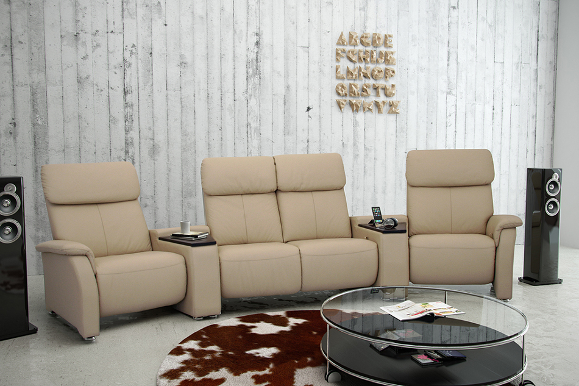
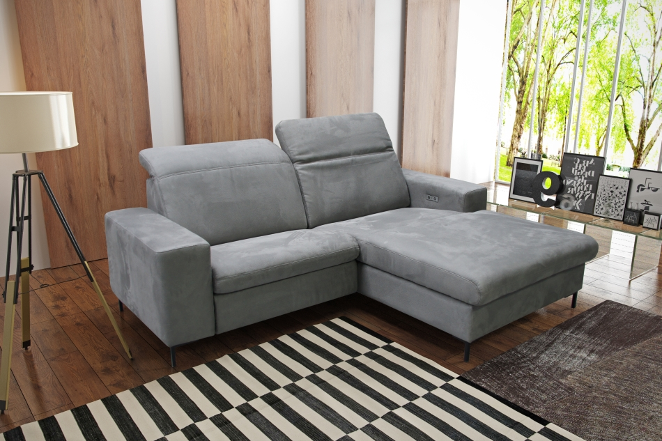
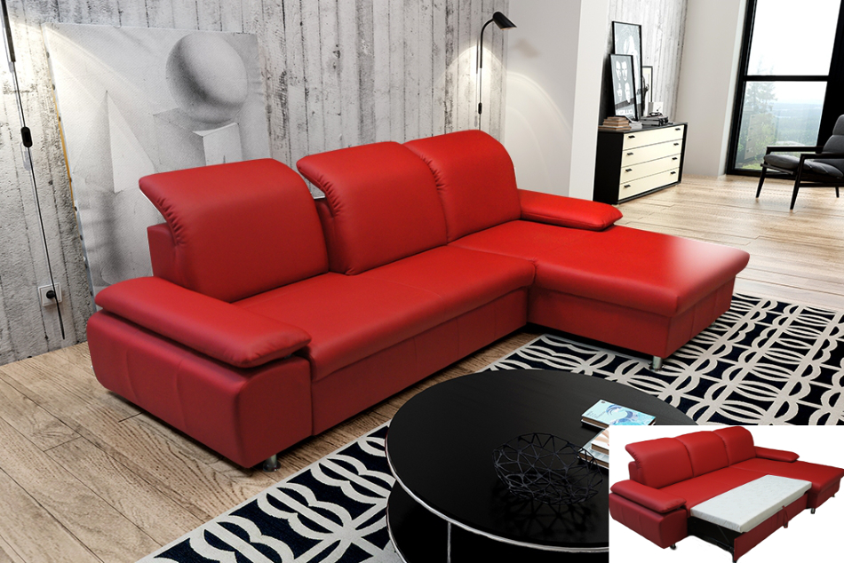
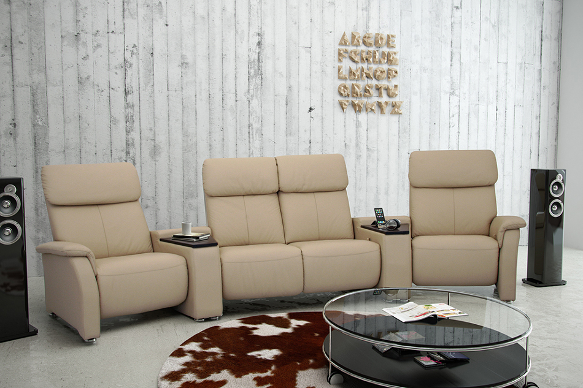
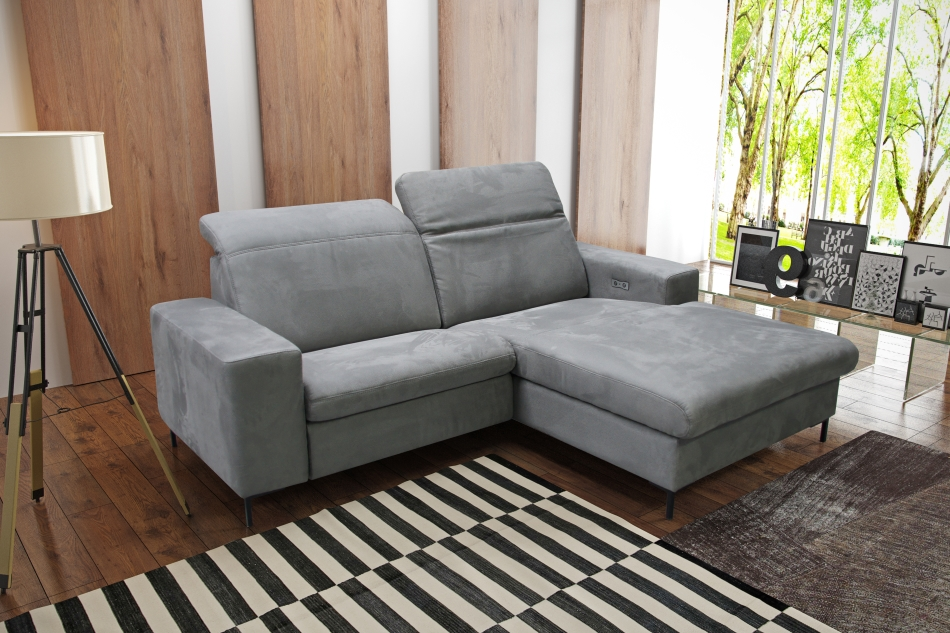
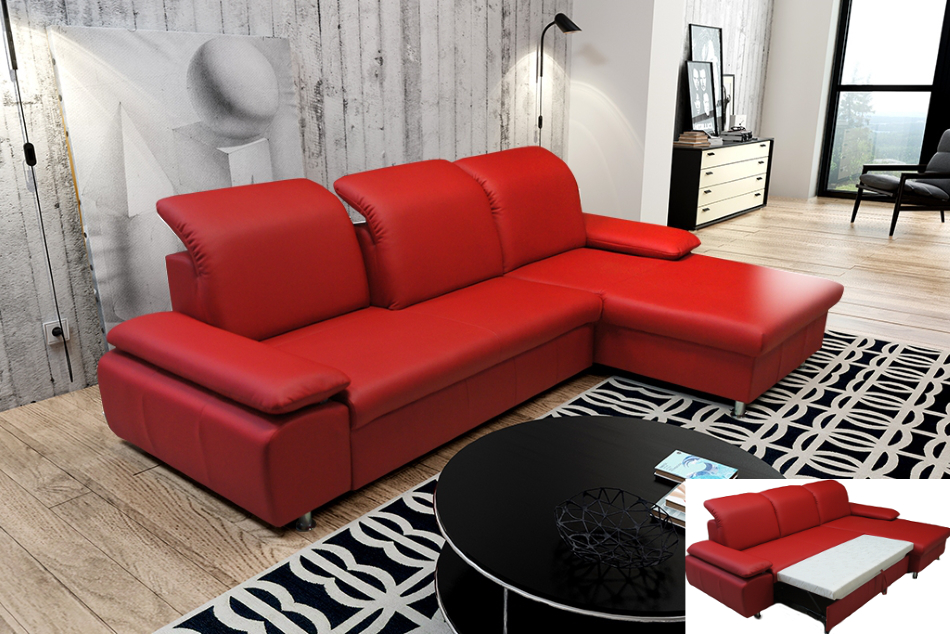

Produkujemy meble w tapicerce zarówno ze skóry jak i z tkaniny o wzornictwie dopasowanym do obecnie panujących trendów. Nasza oferta przeznaczona jest dla szerokiego grona odbiorców poczynając od tradycyjnych brył a kończywszy na nowoczesnym designie. Jesteśmy właścicielm wielu wzorów użytkowych chronionych prawem w Europie. Idąc na przeciw oczekiwaniom klientów do produkcji stosujemy starannie dobrane materiały nawyższej jakości sprawdzone na europejskich rynkach. Meble nasze dodatkowo na życzenie wyposażamy w różnego rodzaju ergonomiczne mechanizmy także z napędami elektrycznymi.
O Nas
Naszym największym atutem jest dwudziestoletnie doświadczenie na takich europejskich rynkach jak: Niemcy, Benelux, Skandynawia, Szwajcaria, Austria i Wyspy Brytyjskie.
Więcej...Kontakt
BIURO, PRODUKCJA, MAGAZYN
Interform Meble sp. z o.o. ul. Kostrzyńska 1 66-400 Gorzów Wlkp. Więcej...Napisz do nas
Chcąc się z nami skontaktować, możesz skorzystać z naszych infolini lub wysłać wiadomość za pomocą formularza kontaktowego. tel.: +48 95 74 02 064 fax.: +48 95 73 75 123
Formularz kontaktowy...